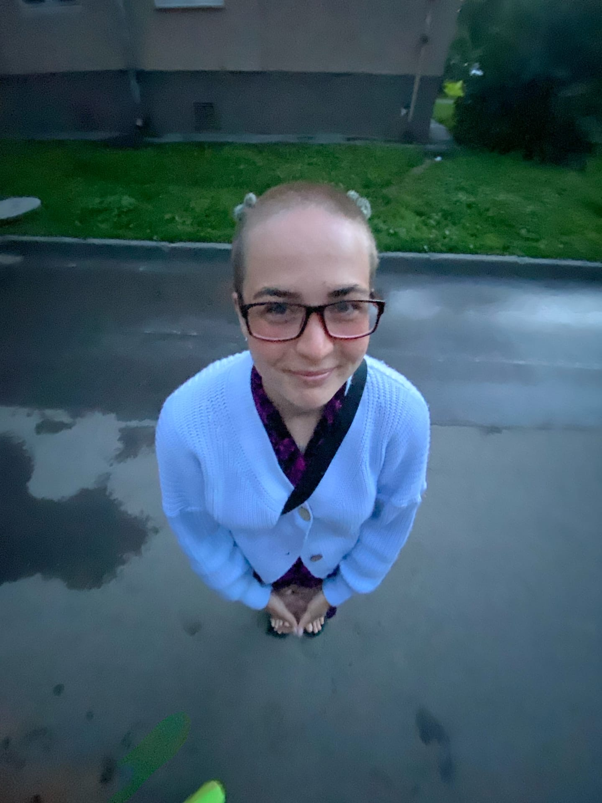

Обо мне

Привет!
Меня зовут Мария, и я — заядлый путешественник. За последние 5 лет я посетила более 20 регионов России и несколько стран.
На этом блоге я делюсь своими маршрутами, фотографиями и советами для тех, кто тоже любит открывать новое.
Мои любимые направления — Алтай, Байкал, Камчатка и Карелия. А ещё я мечтаю побывать в Исландии и Новой Зеландии.